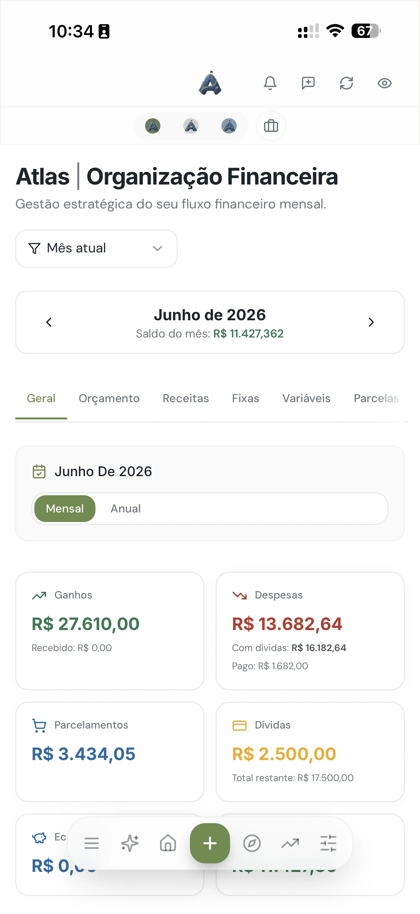
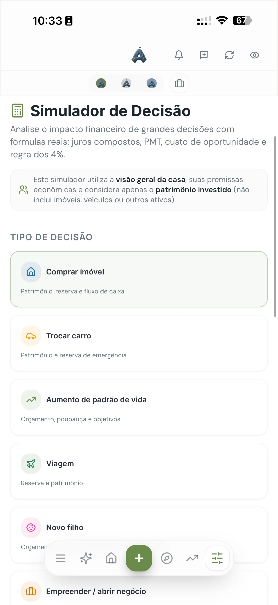
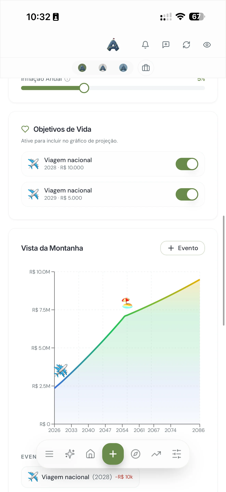

Você trabalha, o dinheiro entra, e no fim do mês ele simplesmente sumiu. Não deu pra guardar de novo. E quando surge uma decisão importante — trocar de carro, aceitar uma proposta, investir naquilo — você decide no escuro, no feeling, sem saber se cabe no seu bolso. Se isso te soa familiar, o problema quase nunca é falta de dinheiro. É falta de plano.
Este guia é o passo a passo que eu usaria com alguém começando do zero. Ele funciona tanto para quem nunca conseguiu guardar um real quanto para quem ganha bem, entende de dinheiro, mas vive no piloto automático. Nas próximas linhas você vai montar seu planejamento financeiro pessoal — do diagnóstico à projeção do futuro — de um jeito que dá pra manter no mês que vem, e no próximo, e no próximo.
O que você vai encontrar aqui
O que é planejamento financeiro pessoal
Planejamento financeiro pessoal é o processo de organizar sua renda, seus gastos, suas dívidas e seus objetivos para tomar decisões de dinheiro com clareza. Em uma frase: é saber quanto entra, para onde vai, quanto sobra e como usar isso para chegar onde você quer.
Repare que não é sobre viver contando centavos nem cortar todo prazer da vida. É o contrário. Quando você tem um plano, gastar deixa de dar culpa, porque você sabe que aquilo cabe. O planejamento não é uma prisão — é o mapa que te dá permissão para gastar com tranquilidade e, ao mesmo tempo, avançar.
Toda montanha precisa de um caminho. O planejamento é esse caminho: ele mostra onde você está hoje, aonde quer chegar e qual é o próximo passo — em vez de você ficar andando em círculos.
Por que a maioria começa e desiste
Quase todo mundo já tentou "se organizar". Baixou uma planilha, anotou os gastos por três dias, e parou. O problema raramente é preguiça. São três armadilhas:
- Esforço manual demais. Anotar cada café, cada corrida de app, cada mercado é chato e a gente esquece. Em duas semanas a planilha está desatualizada e você desiste.
- Foco no lugar errado. Muita gente tenta controlar o pequeno (o cafezinho) e ignora o grande (a assinatura que não usa, os juros do cartão, a parcela que poderia ser renegociada).
- Decidir no escuro. Sem enxergar o quadro completo, você toma decisões grandes no feeling — e é aí que mora o maior estrago, não no delivery de sexta.
A meta não é ser perfeito no controle. É ter clareza suficiente para decidir bem. Um plano 80% seguido vale muito mais do que uma planilha 100% perfeita que você abandonou.
O passo a passo em 7 etapas
1. Diagnóstico: descubra onde você está
Você não consegue planejar uma viagem sem saber o ponto de partida. Então o primeiro passo é fotografar sua situação atual, sem julgamento. Some toda a sua renda de um mês (salário, extras, tudo) e liste todos os seus gastos de um mês real — inclusive as dívidas e as assinaturas. O objetivo aqui não é mudar nada ainda. É só enxergar a verdade. Quase todo mundo descobre um ou dois gastos que nem lembrava que existiam.
2. Categorize e entenda para onde o dinheiro vai
Com tudo listado, agrupe os gastos em categorias: moradia, alimentação, transporte, lazer, assinaturas, dívidas. Isso transforma uma lista bagunçada em informação. De repente fica claro que "gasto muito" na verdade era "gasto 40% da renda com a casa" ou "pago R$300 por mês em assinaturas que quase não uso". Categorizar é o que transforma dado em decisão.

3. Defina metas com data e valor
Objetivo sem número e sem prazo é só desejo. "Quero viajar" não move nada. "Quero R$6.000 para viajar em dezembro" vira um plano: são R$1.000 por mês a partir de agora. Faça isso com cada objetivo — reserva, viagem, entrada de um imóvel, trocar de carro. Metas concretas te dão um motivo para guardar, e é o motivo que sustenta o hábito quando bate a vontade de gastar.
4. Monte sua reserva de emergência
Antes de investir em qualquer outra coisa, construa uma reserva de emergência: um valor guardado em algo seguro e de fácil resgate, para imprevistos (perder a renda, um problema de saúde, o carro que quebrou). A referência clássica é de 3 a 6 meses do seu custo de vida. Essa reserva é o que impede um imprevisto de virar uma dívida no cartão — é a base de tudo o que vem depois.
5. Ataque as dívidas na ordem certa
Se você tem dívidas, elas costumam ser a maior sabotadora do plano — principalmente cartão de crédito e cheque especial, que têm os juros mais altos do mercado. A estratégia mais eficiente é listar todas por taxa de juros e atacar primeiro a mais cara, enquanto mantém o mínimo nas outras. Antes disso, tente renegociar: muitas vezes dá para trocar uma dívida de juros altíssimos por outra bem menor.
6. Decida com dados, não no escuro
Aqui está a etapa que separa quem só "controla gastos" de quem realmente planeja. Toda decisão grande — financiar, investir, mudar de emprego, assumir um novo custo fixo — deveria passar por uma pergunta simples: "isso cabe no meu plano, e o que muda no meu futuro se eu fizer?". Simular o impacto antes de decidir é o que evita arrependimento. Decidir com dados não te deixa mais rígido; te deixa mais confiante para dizer sim.

7. Projete o futuro e revise todo mês
Planejamento não é uma tarefa de uma vez só. Uma vez por mês, sente por 20 minutos, veja se o mês fechou como o planejado e ajuste. Com alguns meses de constância, você começa a enxergar a tendência: quanto seu patrimônio cresce por ano, quando você chega em cada meta, como fica sua situação daqui a 5 ou 10 anos. É quando o dinheiro deixa de ser uma fonte de ansiedade e vira um projeto que você acompanha.

Resumo do caminho: diagnóstico → categorizar → metas com data → reserva → dívidas → decidir com dados → revisar todo mês. Você não precisa fazer tudo hoje. Faça a etapa 1 esta semana; o resto vem em cima dela.
Planilha ou aplicativo?
A planilha é ótima para entender a lógica e funciona bem para quem tem a disciplina de preenchê-la todo dia. O problema é que a maioria não tem — e a planilha vira aquele arquivo abandonado que já citamos. O trabalho manual é justamente o que quebra o hábito.
Um bom aplicativo resolve isso automatizando a parte chata: ele importa seus lançamentos, categoriza sozinho, mostra o quadro completo e ainda projeta o futuro. Você sai do papel de digitador e passa para o papel de quem decide. Menos esforço, mais constância — e constância é o que faz o planejamento realmente funcionar.
Foi exatamente para resolver isso que criamos o Atlas: o plano que um bom assessor faria, dentro de um app. Ele importa seus dados, categoriza, mostra onde você está, projeta seu futuro (a "Vista da Montanha") e deixa você simular decisões antes de tomá-las. É o passo a passo deste guia, no automático. Você pode testar 7 dias grátis, sem cartão.
Erros comuns que sabotam o plano
- Querer a perfeição. Esperar o "mês ideal" para começar é a forma número um de nunca começar. Comece com o mês bagunçado que você tem agora.
- Cortar só os prazeres pequenos. Tirar o café não muda sua vida. Renegociar uma dívida cara ou cancelar assinaturas esquecidas, sim.
- Não ter reserva antes de investir. Investir sem reserva é construir o telhado antes da fundação: no primeiro imprevisto, você resgata tudo no pior momento.
- Decidir grande no feeling. As decisões que mais pesam no seu futuro são as grandes. Simule antes.
- Fazer uma vez e parar. Sem revisão mensal, o plano envelhece. 20 minutos por mês mantêm ele vivo.
Perguntas frequentes
O que é planejamento financeiro pessoal?
É o processo de organizar renda, gastos, dívidas e objetivos para decidir sobre dinheiro com clareza. Na prática: saber quanto entra, para onde vai, quanto sobra e como usar isso para chegar às suas metas.
Como começar do zero?
Pelo diagnóstico. Liste toda a sua renda e todos os gastos de um mês real, categorize, defina metas com data e valor, monte a reserva de emergência e revise a cada mês.
Quanto guardar por mês?
Uma referência é a regra 50/30/20: até 50% para necessidades, 30% para desejos e 20% para poupança e quitação de dívidas. O número ideal depende do seu diagnóstico — o mais importante é guardar de forma automática e constante.
Planilha ou aplicativo?
Planilha funciona para quem tem disciplina de preencher todo dia; costuma ser abandonada. Um app que importa e categoriza sozinho reduz o esforço e aumenta a chance de você manter o hábito.
O próximo passo é seu
Você não precisa virar um especialista em finanças para ter controle da sua vida financeira. Precisa de um caminho — e agora você tem um. Escolha a etapa 1, faça seu diagnóstico esta semana, e construa em cima disso. O resto é constância.
E se você quiser pular a parte manual e ir direto para a clareza, o Atlas faz esse caminho com você.
Transforme este guia em um plano de verdade
O Atlas mostra onde você está, projeta seu futuro e deixa você decidir com dados.
Testar 7 dias grátis, sem cartãoWalter Espíndola
CEO da Zephyr Investimentos, com mais de 10 anos no mercado financeiro gerindo cerca de R$100 milhões em ativos. Criou o Atlas para levar o planejamento que antes só clientes de alto patrimônio tinham para qualquer pessoa que queira clareza com o próprio dinheiro.